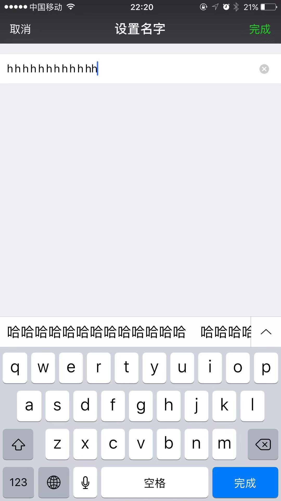

字数限制是所有iOS开发都会遇到的一个问题。业务场景非常常见的，譬如，在微信中，用户昵称限制纯英文32个纯中文16个而emoji是8个，而微博发布动态则是有140字数的限制。但就实现出来的效果看，体验还是不够好的。这篇文章来聊聊文本输入字数限制的正确姿势。
# 限制输入
先上图，这是微信修改昵称的页面：

当你在中文输入法状态下，连续输按下12个h之后，原先文本框内的高亮不见了，并且仍可继续键入1个h，文本框内留下的是”h h h h h h h h h h hh”，一共12个h。不是说好的英文32个吗？是不是很刺激？
不如先埋个坑，说回文本限制输入的基本思路：
在文本输入框已达到限制长度之后，就不应再接受键盘的输入了。实现的方法也很简单。单行文本输入的控件UITextField提供了键盘输入事件代理，代理（遵循UITextFieldDelegate）只要实现了方法- textField:shouldChangeCharactersInRange:replacementString:， 在此方法中返回NO，键盘的输入将不再影响文本控件。然后做个文本截断，当真是顺其自然。微信的小伙伴，看表现必然也是在这里趟的坑了。
对于多行文本控件UITextView同样如此。事实上，是因为两者作为文本输入控件都是遵循UITextInput协议的，通过实现该协议方法可以获得键盘的输入。自定义的文本输入控件，自然也是类似，不赘述。下文将继续以UITextField作为典型。
先上代码再解释：
1
2
3
4
5
6
7
8
9
10
11
12
13
14
15
16
17
18
19
20
21
22
23
24
25
| [self.textField setBk_shouldChangeCharactersInRangeWithReplacementStringBlock:^BOOL(UITextField *textField, NSRange range, NSString *string) {
if (string.length == 0) return YES;
NSInteger selectedLength = range.length;
NSInteger replaceLength = string.length;
NSInteger existedLength = [textField.text composedCharLength];
UITextInputMode *current = [UITextInputMode currentInputMode];
if ([current.primaryLanguage isEqualToString:@"zh-Hans"]) {
UITextRange *selectedRange = [textField markedTextRange];
UITextPosition *position = [textField positionFromPosition:selectedRange.start offset:0];
if (position) {
return YES;
}
}
NSInteger const MAX_LENGTH = 32;
if ((existedLength + replaceLength - selectedLength) > MAX_LENGTH) {
[UIWindow ht_makeToastOnWindow:@"输入超过限制"];
return NO;
}
return YES;
}];
|
代码中3个注释，都是关键。
注1，文本的字数计算。我们的产品同学经常有些特殊的爱好，比如中文按2个英文字数算，emoji按4个。参考文章开头提到的微信规则。字数的统计我们将在第三部分来介绍，这里暂时跳过。你大可以相信-composedCharLength:这个方法是正确的。
注2，键盘输入模式，事实上主要用来查询键盘使用的语言。这里的处理是，如果当前是中文输入法，并且有高亮选中（即备选词尚未键入文本框），那么是允许用户继续输入的。即使还只能输入一个字，也是允许用户连续按下”hhhhhhh”的。体验是很直观的。假如昵称只允许3个中文字，按微信的做法，很可能你连张三（zhang san）都没办法输入。(当然如果只是纯英文的需求，请忽略！)
注3，超长限制输入。这个是这个方法的核心也是最简单的。请注意，请勿在注3逻辑中进行超长截断，这将犯微信错误！只需处理超长不允许输入即可！
# 超长截断
源码胜过语言：
1
2
3
4
5
6
7
8
9
10
11
12
13
14
15
16
17
18
19
20
21
22
23
24
25
26
27
28
29
30
31
32
33
34
35
36
37
38
39
40
41
42
43
44
45
46
47
48
49
50
51
52
53
54
55
56
57
58
59
60
| - (void)limitLengthTo:(NSInteger)maxLength usingCharLength:(BOOL)usingCharLength {
UITextField *textField = self;
NSString *text = textField.text;
NSInteger totalLength = usingCharLength ? [text composedCharLength] : text.length;
NSInteger trimmedLength = maxLength;
UITextInputMode *current = [UITextInputMode currentInputMode];
if ([current.primaryLanguage isEqualToString:@"zh-Hans"]) {
UITextRange *selectedRange = [textField markedTextRange];
UITextPosition *position = [textField positionFromPosition:selectedRange.start offset:0];
if (position) {// 高亮时不截断
return;
}
}
if (totalLength > maxLength) {
[self __trimedToLength:trimmedLength];
}
}
// 注2
- (NSString *)limitedToComposedCharLength:(NSInteger)maxLength {
__block NSInteger count = 0;
__block BOOL finished = YES;
NSMutableString *text = [NSMutableString string];
NSRange range = NSMakeRange(0, self.length);
[self enumerateSubstringsInRange:range options:NSStringEnumerationByComposedCharacterSequences usingBlock:^(NSString * _Nullable substring, NSRange substringRange, NSRange enclosingRange, BOOL * _Nonnull stop) {
const unichar hs = [substring characterAtIndex:0];
NSInteger chatCount = 0;
if ('!' <= hs && hs <= '~' ) {// ASCII码中的英文或数字或英文字符
chatCount = 1;
} else {// 中文( 0x4e00 ~ 0x9fff)或其他
chatCount = 2;
}
if (count + chatCount > maxLength) {
*stop = YES;
finished = NO;
return;
}
count += chatCount;
[text appendString:substring];
}];
return [text copy];
}
// 注3
- (void)__trimedToLength:(NSInteger)trimmedLength {
UITextField *textField = self;
NSString *text = textField.text;
NSRange range = [text rangeOfComposedCharacterSequenceAtIndex:trimmedLength];
if (range.length == 1) {
textField.text = [text substringToIndex:trimmedLength];// 中英文统计情况下会有问题的
} else {
NSRange rangeRange = [text rangeOfComposedCharacterSequencesForRange:NSMakeRange(0, trimmedLength)];
textField.text = [text substringWithRange:rangeRange];
}
}
|
# 字数统计
1中文=2个字，1英文=1个字，1emoji=4个字
1
2
3
4
5
6
7
8
9
10
11
12
13
14
15
16
17
18
19
20
| - (NSInteger)composedCharLength {
__block NSInteger count = 0;
NSRange range = NSMakeRange(0, self.length);
[self enumerateSubstringsInRange:range options:NSStringEnumerationByComposedCharacterSequences usingBlock:^(NSString * _Nullable substring, NSRange substringRange, NSRange enclosingRange, BOOL * _Nonnull stop) {
const unichar hs = [substring characterAtIndex:0];
NSInteger chatCount = 0;
if ('!' <= hs && hs <= '~' ) {
chatCount = 1;
} else if ((0xd800 <= hs && hs <= 0xdbff) || (0x2600 <= hs && hs <= 0x27FF)){
chatCount = 4;
} else {
chatCount = 2;
}
count += chatCount;
}];
return count;
}
|